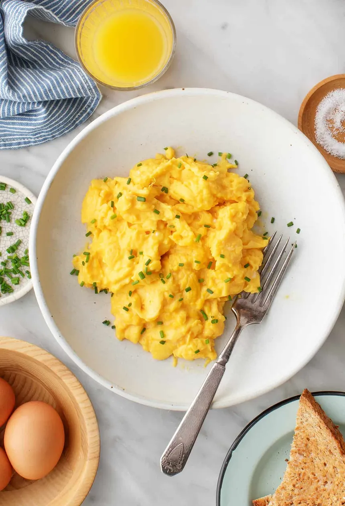

Scrambled eggs
Ingredients:
- 2 large eggs
- 1 tablespoon milk or cream (optional, for creamier eggs)
- ½ tablespoon butter or oil
- Salt and pepper to taste
- Optional garnishes: chopped chives, shredded cheese
Instructions:
- Crack the eggs into a bowl.
- Add milk or cream (if using), salt, and pepper. Whisk gently until the yolks and whites are just combined. Be careful not to over-whisk.
- Heat butter or oil in a non-stick skillet over medium-low heat until melted and shimmering.
- Pour the egg mixture into the skillet.
- Let the eggs cook undisturbed for about 30 seconds, or until a thin layer sets around the edges.
- Gently push the cooked egg from the edges towards the center, tilting the pan to allow the uncooked egg to flow underneath.
- Continue to cook, stirring gently and occasionally, until the eggs are cooked through but still slightly moist. The cooking time will depend on your desired consistency.
- Remove from the heat immediately.
- Serve hot, garnished with chopped chives or shredded cheese if desired.